Steam Turbine L1
Created Monday 03 December 2012
An analytic model for a turbine is derived using conservation of mass and energy together with Stodola's law. An adiabatic expansion is assumed in which isentropic efficiency is present. The mechanical efficiency of the turbine is also considered in the model.
1. Purpose of Model
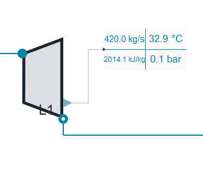
In this model the time behaviour of mass flow, temperature, pressure and density is modelled for a turbine that employs simple impulse rotors separated essentially by a partition wall with a series of tunnels cut into it; the steam jets are assumed to be directed onto the impulse rotor (Zolley nozzle). A mechanical port can be included optionally.
2. Level of Detail, Physical Effects Considered and Physical Insight
2.1 Physical Effects Considered
Referring to Brunnemann et al. [1], this model refers to the level of detail L1 because a single mass balance is considered in the turbine where the hydraulic efficiency of the turbine is defined by its characteristic line.
2.2 Physical Effects Considered
- The expansion of the vapour is adiabatic (Isentropic process).
- Kinetic and potential energy are neglected.
- Rate of heat transfer between the nozzle and the surroundings 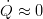.
3 Limits of Validity
- Backflow is not supported.
- High backpressure.
- adiabatic expansion
- changes in kinetic energy between inlet and outlet are negligible
- hydraulic efficiency depends on mass flow rate only and is defined via a characteristic line
4. Interfaces
4.1 Physical Connectors
- Inlet and outlet connectors combined for:
- Mass flow rate in the connection ports [kg/s].
- Thermodynamic pressure in the connection ports [Pa].
- Specific thermodynamic enthalpy close to the connection ports [J/kg].
- Medium properties at the ports.
4.2 Summaries
- The medium properties are inherited from the Records model, in this model the next summaries are included:
- Mass specific 0-D.
4.3 Tables
- Hydraulic Efficiency interpolation table for the mass flow rate.
4.4 Medium Models
- Fluid Medium Model.
- Fluid Medium Model for an isentropic process.
5. Nomenclature
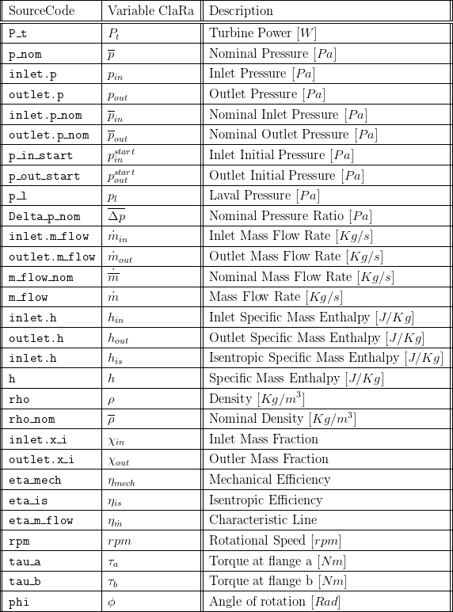
6. Governing Equations
6.1 System Description and General model approach
The turbine is considered, as mentioned, as a Zolley Nozzle in which steady incompressible flow is flowing in-out, so that no reversal is allowed. Balances of energy and mass are done to compute the power produced by the turbine. Efficiencies are considered, one mechanical and one isentropic for the adiabatic process of the turbine. The dynamical relation between pressure and mass flow is considered using Stodola's law. For this type of turbine it can be noted that the pressure ratio in terms of the mass flow produces geometrically an ellipsoidal shape in which a highly nonlinear dependence of extraction pressures is modelled using such geometrical shape.
6.2 Governing Model Equations
Boundary Conditions
The boundary conditions are the pressure conditions. They are chosen so that its values match the physical location of the turbine's inlet and outlet valves.
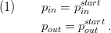
The values of the enthalpy at the boundaries are chosen so that at no point reverse flow is supported. Therefore, the inlet enthalpy is that of the medium flowing at the point where it enters the turbine, the outlet enthalpy is the actual values of the state
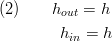
Mass Balance
Conservation of mass for incompressible steady flow is considered
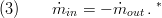
*The outlet flow from the object is considered as negative inflow in the turbine.
Efficiency
The hydraulic efficiency is calculated in a separate model. All losses which occur by friction of the working fluid are summarised in this factor. Also the kinetic energy which leaves the tubrine is included, see [2]. Three models for the efficiency can be chosen:
- A mass flow rate dependent model, given by the characteristic line
 in which its range is defined by the static isentropic efficiency
in which its range is defined by the static isentropic efficiency  :
:
The time varying efficiency is then proportional to the inlet mass flow and the nominal mass flow where the proportionality is determined by a linear interpolation of the values given by the characteristic line 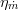.
- A volume flow dependent model , given by the characteristic line 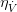
- A semi-empirical model according to [5]. Its idea is to express the efficiency of the blade tip velocity to a theoretical steam velocity. The blade speed is proportional to the turbine shaft speed, the steam velocity is proportional to the square root of the enthalpy drop over the turbine.
Output State
The enthalpy of the system is an adiabatic process which considers isentropic efficiency for the enthalpy changes in the turbine,
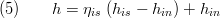
where 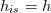 is the measured enthalpy corresponding to the enthalpy at the end of the adiabatic process and 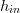 is the enthalpy value at the inlet of the turbine.
Mass Flow Rate and Pressure
The nonlinear dependence of mass flow rate and pressure in the turbine defines a line which has the shape of an ellipse, see figure 1.
The equation relating pressure and mass flow follow this geometrical representation also called Stodola's Law; confining the rate of pressure at the input and output it is possible to determine the outlet mass flow by:
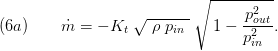
please note that in the common literature Stodola's law is formulated applying the inlet temperature. This comes from the application of the ideal gas law. Thus, the above equation (6a) is more precise in flows near the dew line.
According to [3] the Stodola's Law changes with a small number of turbine stages for choked flow conditions, the mass flow rate does not depend on the outlet pressure. With the parameter chokedFlow==true equation (6a) changes to:
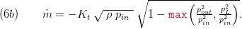
with the Laval pressure defined as:
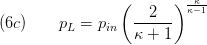
Also the nonlinear relationship is applied to the nominal operation values for density, pressure and mass flow on the coefficient:
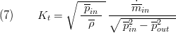
Where 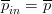 and 
Taking into consideration the physical effects mentioned in section 2. Using equation 3) and 4) it is possible to apply an energy balance in the turbine to obtain the work produced during the process,
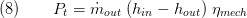
Mechanical ports can be used, to attach e.g. a generator to the turbine. This is set by the parameter useMechanicalPort==true. Thus, a momentum balance is introduced:
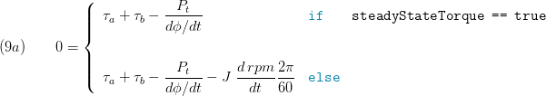
The rotational speed is calculated:
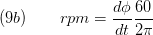
If no mechanical port is used the rotational speed is set fixed:
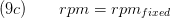
Notice that the mechanical efficiency of the turbine is also considered.
The inherent assumptions of the cone of STODOLA:
see Sigloch, H.: "Strömungsmaschinen - Grundlagen und Anwendungen" , Menny, K. : "Strömungsmaschinen" , Traupel: "Thermische Turbomaschinen II" for further details,
- the turbine is considered as a ZOLLEY nozzle
- constant rotation speed (which is true for most steam turbine applications during normal operation)
- constant inlet temperatures - to cope with varying temperatures a density correction term is added in the above equations
- constant flow cross section so the discussion always takes the states of the fully loaded inlet cross section into account, i.e. when using a turbine valve the inlet state is the state after the valve, when using a regulating wheel (LAVAL or CURTIS type) then the state after the regulation wheel has to be used
- the mass flow mus be subcritical, i.e. Ma < 1 this is true for most applications and only small deviations occur for the last low pressure stages where considerable supersonic speed may be present
- an infinite number of stages is assumed. However, literature claims that the STODOLA law fits well for a finite number of stages, too.
- The polynomial exponent of the expansion is constant for nominal load and part load
Fluid Mixtures and Chemical Reactions
No chemical reactions are considered in the equation; the mixtures at the input port equal the mixtures at the outlet port so the mass fractions form the system's medium are the same at all times; the inlet and outlet mass fractions are constant in time.
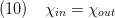
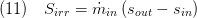
7. Remarks for Usage
- Homotopy initialisation is supported.
- No control volume included.
8. Validation
8.1 Scenario Description
In figure 2 a test scenario with duration of 4 hours is created in order to test the turbine model. During the testing a pressure gradient approx 80 bars is induced to the turbines inlet in an interval of approx. 2.5 hours, while small variations on the turbine inlet are induced during the whole test.
8.2 Validation Results
Concerning the turbines mass flow rate and power the Modelica model agrees perfectly with the measurement data for the testing scenario.
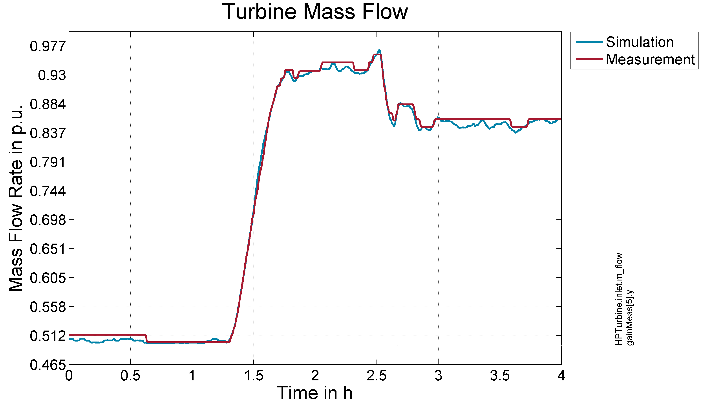 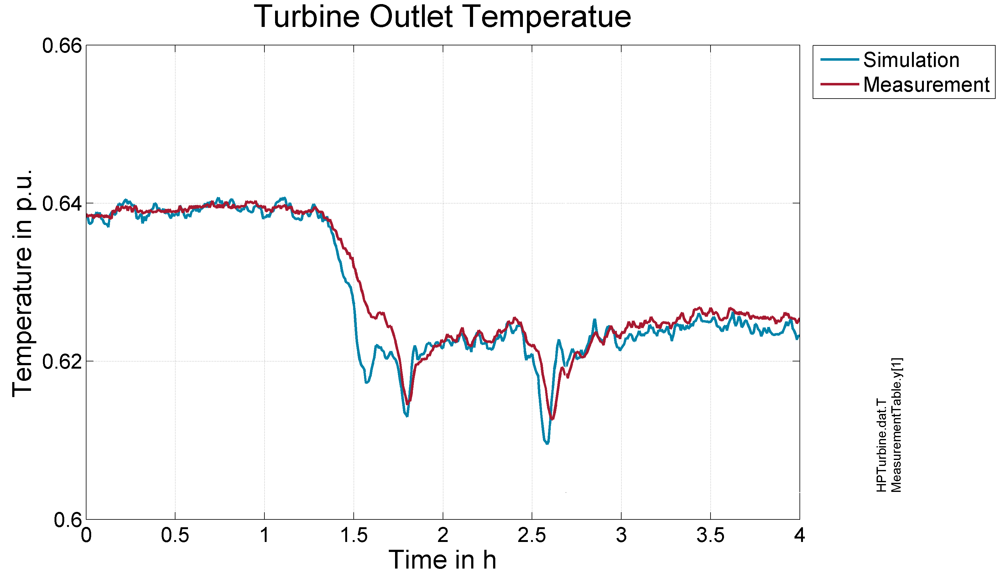
Figure 3- Response to Test scenario outlet Turbine Mass Flow Figure 4- Response to Test scenario outlet Turbine Temperature
9. References
[1] Johannes Brunnemann and Friedrich Gottelt, Kai Wellner, Ala Renz, André Thüring, Volker Röder, Christoph Hasenbein, Christian Schulze, Gerhard Schmitz, Jörg Eiden: "Status of ClaRaCCS: Modelling and Simulationof Coal-Fired Power Plants with CO2 capture", 9th Modelica Conference, Munich, Germany, 2012
[2] Sigloch, H.: "Strömungsmaschinen - Grundlagen und Anwendungen" (in German), Hanser publishing, Munich, 1993, 2nd edition
[3] Menny, K. : "Strömungsmaschinen" (in German), Teubner publishing, Wiesbaden, 2011, 5th edition.
[4] Traupel: "Thermische Turbomaschinen 2: Geänderte Betriebsbedingungen, Regelung, machinsche Probleme, Temperaturprobleme (in German), Springer publishing, Berlin,1982, 3rd edition.
[5] Ray, A: Dynamic modelling of power plant turbines for controller design, Appl. Math. Modelling, 1980, Vol. 4
10. Version History
01.11.2012 - v0.1 - initial implementation - Friedrich Gottelt XRG Simulation
25.04.2016 - v1.1.1 - included optional mechanical ports, included option to calculate choked flow conditions - Timm Hoppe XRG Simulation
20.01.2017 - v1.2.0 - included replaceable models for hydraulic efficiency - Timm Hoppe XRG Simulation
Backlinks: ClaRa:Components:TurboMachines:Pumps:PumpVLE L1 affinity